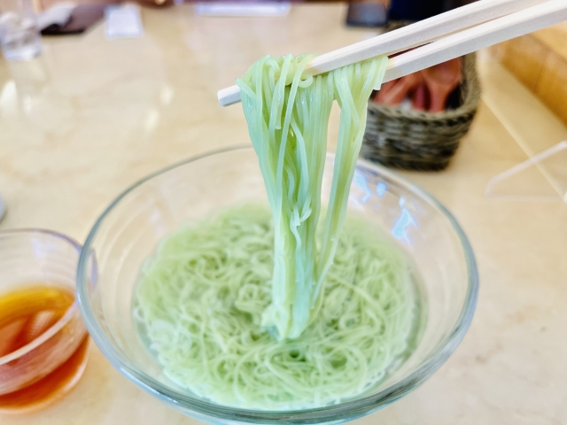
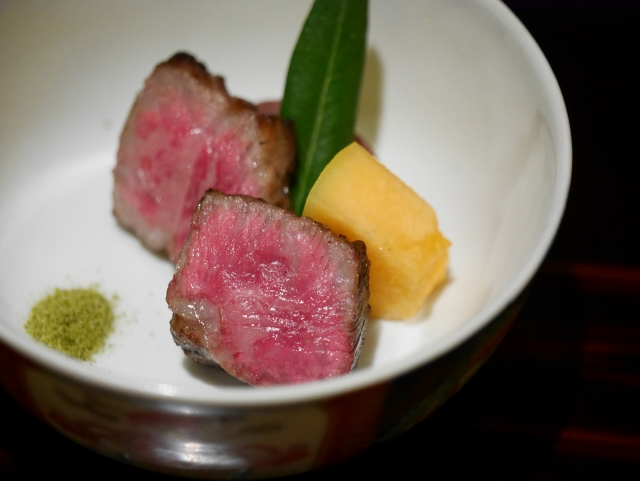

オリーブを活かした絶品グルメと、小豆島の伝統的な食文化を味わう。
小豆島はオリーブの栽培で有名ですが、その恵みを活かした特産グルメも豊富です。 今回は、オリーブの風味が際立つ4つの逸品をご紹介します。
-

オリーブそうめん
オリーブそうめんは、伝統的な手延べそうめんに小豆島産のオリーブを練り込んで作られたそうめんです。 オリーブの豊かな風味と爽やかな緑色が特徴で、他にはない風味を楽しめます。
提供場所を確認 -

オリーブ牛ステーキ
小豆島産のオリーブ牛は、オリーブの搾りかすを飼料として育てられた牛から生まれるブランド牛。 オリーブの豊かな香りと甘みが肉にしみ込み、柔らかい肉質が特徴です。 ステーキにすることで、その風味を最大限に引き出せます。
提供場所を確認 -

オリーブラーメン
オリーブラーメンは、小豆島産オリーブの風味を生かしたユニークなラーメンです。 麺にオリーブのエキスが練り込まれており、スープにもオリーブオイルを使ったものが多いです。 ヘルシーかつコクのある味わいが魅力です。
提供場所を確認 -

手延べそうめん
小豆島の手延べそうめんは、400年以上の歴史を誇る伝統食。 島の気候と風が生み出す独特の食感とコシが魅力です。 島の職人が一本一本丁寧に作り上げたそうめんは、細くもしっかりとした食べ応えを持っています。
提供場所を確認